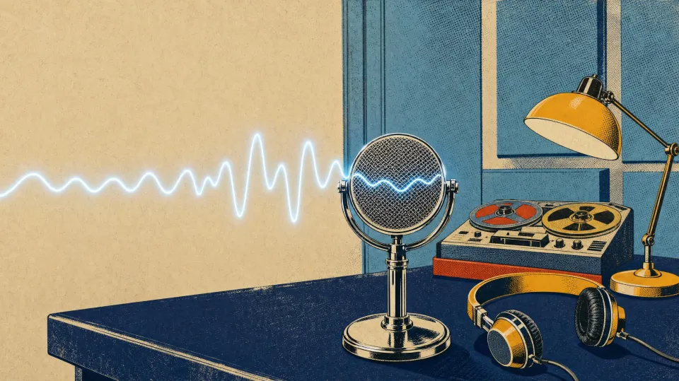

Looking for certificate scans and credentials? Explore the dedicated Certifications & Publications gallery.
View Certifications Gallery →
Behind the builds
Problems, process & outcomes.
Hackathon projects, challenge submissions and the thinking behind them.
Loading project stories…